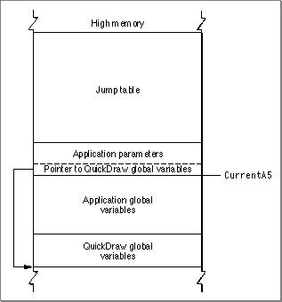

The A5 World
Every classic 68K application contains an A5 world, an area of memory that stores the following items:The data is referenced as offsets from the value of the A5 register, hence the name A5 world. The application's global variables and QuickDraw global variables are referenced with negative offsets from A5, while application parameters and jump table entries are referenced with positive offsets.
- the jump table, which allows the application to make calls between segments
- the application's global variables
- the application's QuickDraw global variables, which contain information about the drawing environment
- the application parameters, which are reserved for use by the Mac OS
Figure 10-1 shows a classic 68K A5 world.
Figure 10-1 Classic 68K A5 world

The system global variable
CurrentA5holds the value of the A5 register.
© Apple Computer, Inc.
11 MARCH 1997